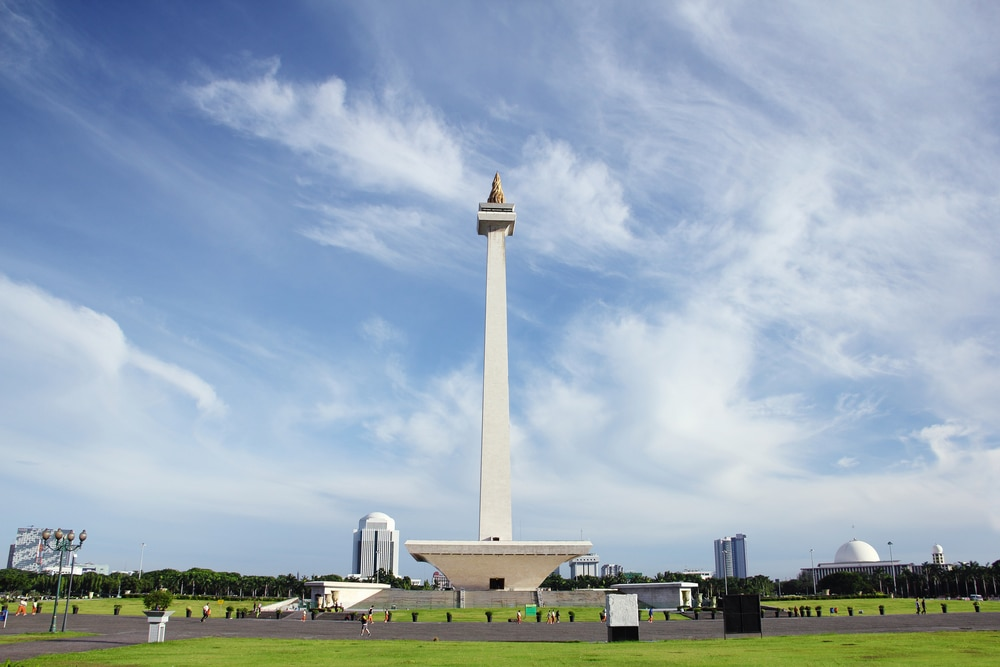
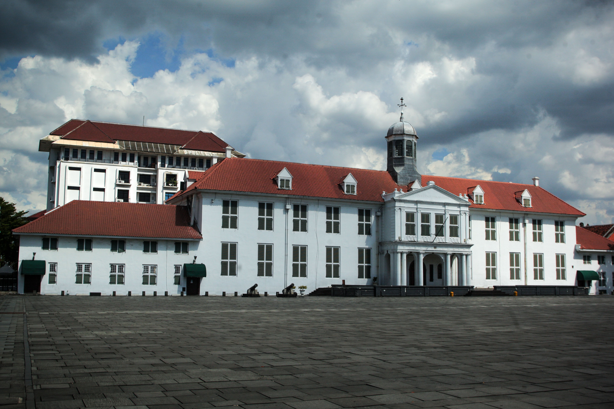
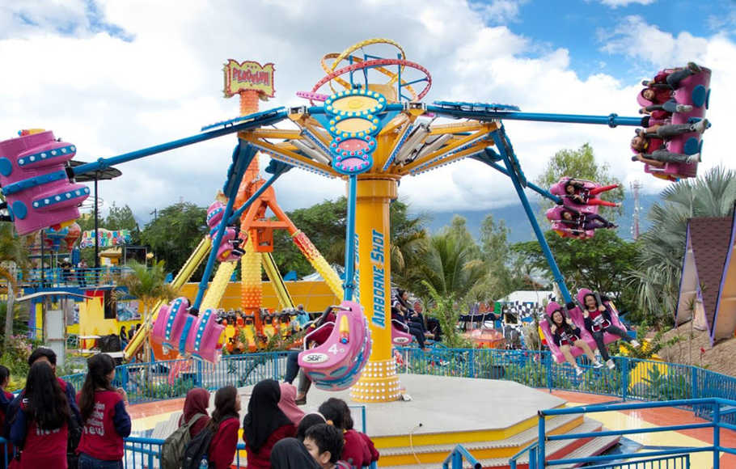

Tourist Attraction
Most visited places by tourists !
1. Monas

Monas Tower is the most famous monument in Jakarta and stands proud in the city as a symbol of independence in Indonesia which was declared in 1945 after years of Dutch colonial rule. The monument is located in Merdeka Square which means ‘freedom’ in Indonesian and there is a gallery where you can learn more about Indonesia’s often tumultuous history. The main draw however is a trip to the observation deck at the top of the tower which affords views in all directions across the city.
2. Kota Tua

Kota Tua also goes by the name Old Town Batavia and is one of the most historically significant parts of Jakarta. As you walk around the area you will find pretty architecture that dates from the Dutch colonial period and you can also visit the cobbled central town square which is the signature feature of the area. This is seen as the cultural heart of the city and many artists and photographers gravitate here to take in the relaxed atmosphere and old world feel, and the area is also studded with cafes so you can have a drink and enjoy the surroundings. It also has a high concentration of museums so you can learn some history here at the same time.
3. Dufan

Dunia Fantasi is Jakarta’s answer to Disneyland and fans of the famous theme park from the United States may find many parts of it surprisingly familiar. There is a Main Street here as well as a Puppet Castle and you will find a range of over 30 rides such as the Niagara Flume and the Halilintar twister. There is also a Star Wars section and a large Ferris wheel that lets you take in the views all over the park. This is a great choice if you are looking for something to do with children and there is also a theatre that has a range of shows about Indonesia.